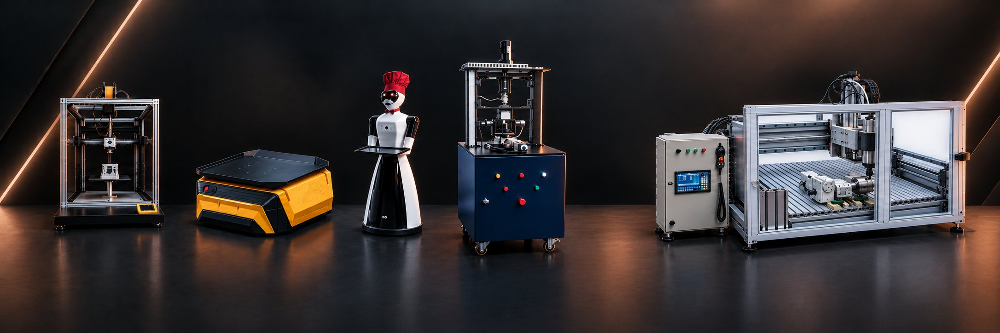
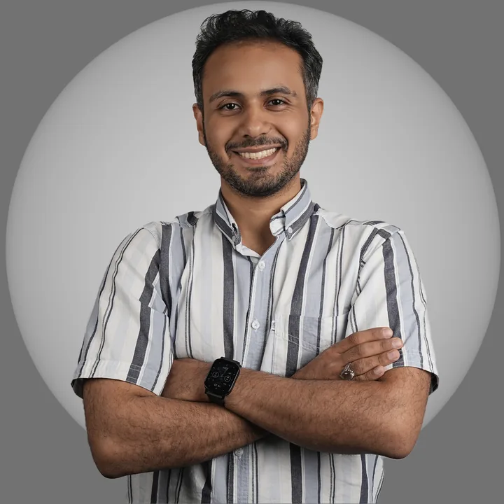
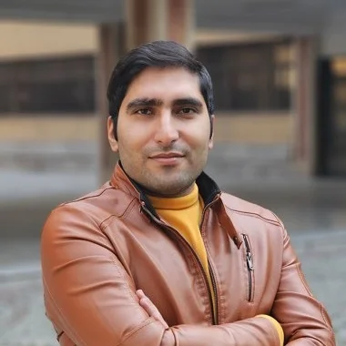
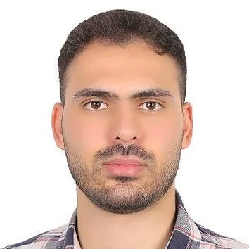
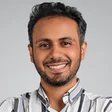
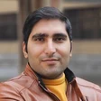
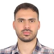

Industrial robots, custom machinery and automation — designed and built by one team.رباتهای صنعتی، ماشینآلات سفارشی و اتوماسیون؛ طراحی و ساخت در یک تیم.
Three mechanical engineers from Sharif, IUST, K. N. Toosi and Tarbiat Modares universities. We take a project from concept design through fabrication, quality control and commissioning.سه مهندس مکانیک از دانشگاههای صنعتی شریف، علم و صنعت، خواجه نصیر و تربیت مدرس. پروژه را از طراحی مفهومی تا ساخت، کنترل کیفیت و راهاندازی پیش میبریم.



Enteha Group is a team of three mechanical engineers working on the design and fabrication of industrial machines, robots and custom equipment. Our work covers the whole chain: concept and detailed design, engineering analysis, fabrication and assembly, quality control and commissioning.گروه فنی مهندسی انتها تیمی سهنفره از مهندسان مکانیک است که روی طراحی و ساخت ماشینآلات صنعتی، ربات و تجهیزات سفارشی کار میکند. کار ما کل زنجیره را پوشش میدهد: طراحی مفهومی و تفصیلی، تحلیل مهندسی، ساخت و مونتاژ، کنترل کیفیت و راهاندازی.
Our backgrounds complement each other: machine and robot design, mechatronics and automation; manufacturing, composites and quality control; and mechanism design, control and medical robotics. Between us we hold degrees from four of Iran's leading technical universities.تخصصهای ما مکمل یکدیگرند: طراحی ماشین و ربات، مکاترونیک و اتوماسیون؛ ساخت و تولید، کامپوزیت و کنترل کیفیت؛ و طراحی مکانیزم، کنترل و رباتیک پزشکی. مدرکهای ما از چهار دانشگاه صنعتی برتر کشور است.
Our work has been recognised by the Alborz Elite Prize, the Khwarizmi Youth Festival, the Iran Industrial Design Festival and Sharif Science and Technology Park, and published in Scientific Reports and the International Journal of Mechanical Sciences.کارهای ما در جایزهی البرز نخبگانی، جشنوارهی جوان خوارزمی، جشنوارهی طراحی صنعتی ایران و پارک علم و فناوری شریف برگزیده شده و در مجلههای Scientific Reports و International Journal of Mechanical Sciences منتشر شده است.
Each project is led by the member whose field it falls in, with the others on design review, fabrication and testing.هر پروژه را عضوی هدایت میکند که در حوزهی تخصص اوست و دو نفر دیگر در بازبینی طراحی، ساخت و آزمون همراهی میکنند.
MSc Applied Design, Sharif University of Technology · BSc Mechanical Engineering, IUSTکارشناسی ارشد طراحی کاربردی، دانشگاه صنعتی شریف · کارشناسی مکانیک، دانشگاه علم و صنعت ایران
Mechanical design of industrial machines and robots, carried through fabrication, assembly and commissioning. Laureate of the 64th Alborz Elite Prize and twice second-place winner at the Khwarizmi Youth Festival.طراحی مکانیکی ماشینها و رباتهای صنعتی و پیگیری ساخت، مونتاژ و راهاندازی آنها. برگزیدهی شصتوچهارمین جایزهی البرز و دو بار دارندهی مقام دوم جشنوارهی جوان خوارزمی.
LinkedInلینکدینMSc Manufacturing Engineering, Tarbiat Modares University · BSc Mechanical Engineering, Sharif University of Technologyکارشناسی ارشد ساخت و تولید، دانشگاه تربیت مدرس · کارشناسی مکانیک، دانشگاه صنعتی شریف
Fabrication of industrial parts and structures, composites and 3D printing. Led production of the postal sorting robots and now runs contract fabrication, quality control and assembly of industrial part sets.ساخت قطعات و سازههای صنعتی، کامپوزیت و چاپ سهبعدی. سرپرستی تولید رباتهای سورتر پستی را بر عهده داشته و اکنون پیمانکاری ساخت، کنترل کیفی و مونتاژ مجموعههای صنعتی را انجام میدهد.
LinkedInلینکدینMSc Applied Design (Dynamics, Control & Robotics), Sharif University of Technology · BSc Mechanical Engineering, K. N. Toosi Universityکارشناسی ارشد طراحی کاربردی (دینامیک، کنترل و رباتیک)، دانشگاه صنعتی شریف · کارشناسی مکانیک، دانشگاه خواجه نصیر
Mechanism design, control and medical robotics. Handles estimating, procurement and fabrication follow-up for the group's projects. Named top researcher of Sharif's mechanical engineering faculty in 2025.طراحی مکانیزم، کنترل و رباتیک پزشکی. برآورد و قیمتگذاری، تأمین متریال و پیگیری ساخت پروژههای گروه با اوست. پژوهشگر برتر دانشکدهی مهندسی مکانیک شریف در سال ۱۴۰۴.
LinkedInلینکدینTypical projects we take on, from a single custom machine to series parts.نمونهای از پروژههایی که میپذیریم؛ از یک دستگاه سفارشی تا قطعات سری.
Custom machines from concept design to fabrication, assembly and commissioning.دستگاه سفارشی از طراحی مفهومی تا ساخت، مونتاژ و راهاندازی.
Industrial and service robots, PLC and HMI, electronics and motion control.ربات صنعتی و خدماتی، PLC و HMI، الکترونیک و کنترل حرکت.
Steel and 316 stainless frames for mounting and holding equipment.سازههای فولادی و استیل ۳۱۶ برای نصب و نگهداری تجهیزات.
Enclosures and vessels designed and built for their working pressure.طراحی و ساخت محفظه متناسب با فشار کاری.
Design and machining of plastic injection moulds.طراحی و ماشینکاری قالب تزریق پلاستیک.
Polymer and resin additive manufacturing, composite parts and printer design.ساخت افزایشی پلیمری و رزینی، قطعات کامپوزیتی و طراحی پرینتر.
Feasibility and production of aligners, veneers and dental parts.امکانسنجی و ساخت الاینر، لمینت و قطعات دندانی.
Display and teaching models, including cutaway assemblies.ماکتهای نمایشی و آموزشی، از جمله مدلهای برشخورده.
Technical consulting, dimensional and weld inspection, techno-economic estimates.مشاورهی فنی، بازرسی ابعادی و جوش، برآورد فنی و اقتصادی.
Click a project to see photos and details. The small portraits show who did it.برای دیدن تصویر و توضیحات هر پروژه، روی آن کلیک کنید. عکسهای کوچک، انجامدهندهی کار را نشان میدهند.
The team's most important scientific and technological awards.مهمترین دستاوردهای علمی و فناورانهی اعضای گروه.

One of 12 laureates in the Technologists & Inventors category, for the knee prosthesis constraint and stability test rig; with a commendation from Sharif University of Technology and a silver medal — 2026.یکی از ۱۲ برگزیدهی بخش فناوران و مخترعان، برای دستگاه تست تقید و پایداری پروتز زانو؛ همراه با تقدیر دانشگاه صنعتی شریف و اهدای مدال نقره — ۱۴۰۵.

For the postal sorting robots — 2024.برای رباتهای سورتر پستی — ۱۴۰۳.
For the knee prosthesis test rig, with a UNESCO certificate and a presidential commendation — 2022.برای دستگاه تست پروتز زانو، همراه با گواهی یونسکو و تقدیر رئیسجمهور — ۱۴۰۱.
Faculty of Mechanical Engineering, Sharif University of Technology — 2021.دانشکدهی مهندسی مکانیک، دانشگاه صنعتی شریف — ۱۴۰۰.
For the postal sorting robots team — 2024.برای تیم رباتهای هوشمند پستی — ۱۴۰۳.
For the postal sorting robots — 2024.برای رباتهای هوشمند پستی — ۱۴۰۳.

MSc level, Faculty of Mechanical Engineering, Research Week — 2025.مقطع کارشناسی ارشد، هفتهی پژوهش — ۱۴۰۴.
International Conference on Robotics and Mechatronics, IUST — 2025.کنفرانس بینالمللی رباتیک و مکاترونیک، دانشگاه علم و صنعت — ۱۴۰۴.
Iranian Society for Engineering Education — 2025.انجمن آموزش مهندسی ایران — ۱۴۰۴.
Among more than 10,000 candidates; and rank 11 in the final stage of the national student olympiad in mechanical engineering — 2018.از میان بیش از ۱۰٬۰۰۰ شرکتکننده؛ و رتبهی ۱۱ مرحلهی نهایی المپیاد علمی دانشجویی مکانیک — ۱۳۹۷.
Mechanical engineering — 2022; also ranked 1st of 117 in his BSc entry year at K. N. Toosi University.مهندسی مکانیک — ۱۴۰۱؛ و رتبهی ۱ از میان ۱۱۷ ورودی کارشناسی دانشگاه خواجه نصیر.
Tarbiat Modares University; selected by the exceptional talents office.دانشگاه تربیت مدرس؛ منتخب استعدادهای درخشان.
Khoshkhan Publishing — 2018.نشر خوشخوان — ۱۳۹۷.
Journal and conference papers by the team.مقالات مجله و کنفرانسی اعضای گروه.
A study of friction between bone and titanium (Ti6Al4V) implants made by selective laser melting (SLM). The friction coefficient was measured for different combinations of bone density, implant surface texture and load — results that support the design of custom orthopaedic implants matched to each patient's bone.بررسی رفتار اصطکاکی میان استخوان و ایمپلنتهای تیتانیومی (Ti6Al4V) ساختهشده با روش ذوب لیزری انتخابی (SLM). در این پژوهش، ضریب اصطکاک برای ترکیبهای مختلف چگالی استخوان، بافت سطح ایمپلنت و میزان بار اندازهگیری شد؛ نتایجی که به طراحی ایمپلنتهای ارتوپدی سفارشی و متناسب با ویژگیهای استخوانی هر بیمار کمک میکند.
Industrial parts, assemblies and structures: estimating and pricing, material procurement, managing machining, laser cutting, bending, rolling and welding, quality control and assembly.ساخت قطعات، مجموعهها و سازههای صنعتی: برآورد و قیمتگذاری، تأمین متریال، مدیریت فرآیندهای ماشینکاری، برش لیزر، خمکاری، نورد و جوشکاری، کنترل کیفیت و مونتاژ.
Part and assembly design, dimensional and weld inspection, and management of machining and external fabrication shops; more than 8,000 industrial parts delivered so far.طراحی قطعه و مجموعه، بازرسی ابعادی و جوش، و مدیریت کارگاههای ماشینکاری و ساخت بیرونی؛ تا امروز بیش از ۸٬۰۰۰ قطعهی صنعتی تحویل شده است.
Contract fabrication, quality control and assembly of industrial part sets; leading an engineering team.پیمانکاری، ساخت، کنترل کیفی و مونتاژ مجموعهقطعات صنعتی و مدیریت تیم مهندسی.
Lower-limb exoskeleton: concept design, actuator selection, structure and mechanism, detailed mechanical design.ربات اسکلت بیرونی پایینتنه: طراحی مفهومی، انتخاب عملگر، طراحی سازه و مکانیزم و طراحی مکانیکی جزئی.
Reviewing and evaluating patent applications in mechanical engineering.بررسی و داوری تقاضانامههای ثبت اختراع در حوزهی مهندسی مکانیک.
Taught Manufacturing Processes and Physics 2 in the second semester of 2023–24.تدریس دروس «روشهای تولید» و «فیزیک ۲» در نیمسال دوم ۱۴۰۲-۱۴۰۳.
Taught the Dynamics of Machinery and Measurement & Control laboratories; TA for Nonlinear Control, Medical Robotics, Musculoskeletal Biomechanics and Advanced Dynamics.تدریس آزمایشگاههای دینامیک ماشین و اندازهگیری و کنترل؛ دستیار آموزشی دروس کنترل غیرخطی، رباتیک پزشکی، بیومکانیک اسکلتیعضلانی و دینامیک پیشرفته.
Research in medical and rehabilitation robotics, supervised by Dr Farzam Farahmand and Dr Saeed Behzadipour.پژوهش در رباتیک پزشکی و توانبخشی، زیر نظر دکتر فرزام فرهمند و دکتر سعید بهزادیپور.
Fabrication and production management of smart parcel-sorting robots for Iran Post; production line design to industrial standards; cost and process optimisation.ساخت و مدیریت تولید رباتهای هوشمند تفکیک مرسولات پست ایران؛ طراحی خط تولید مطابق استانداردهای تولید صنعتی؛ بهینهسازی هزینه و فرآیند.
Concept design, feasibility study and dynamic analysis of a construction-printing robot in ADAMS.طراحی مفهومی، امکانسنجی و تحلیل دینامیکی مکانیزم ربات چاپ ساختمان با نرمافزار ADAMS.
Mechanical and electronic design of an omnidirectional mobile robot.طراحی مکانیک و الکترونیک ربات متحرک با چرخهای همهجهته.
Mechanical development of industrial robots; managed the build of 50 sorting robots for Iran Post's Tehran distribution centre and 30 for Kermanshah, coordinating workshops and supervising the assembly and integration team.توسعهی مکانیکی رباتهای صنعتی؛ مدیریت ساخت ۵۰ ربات سورتر برای مرکز توزیع مرسولات تهران و ۳۰ ربات برای کرمانشاه، هماهنگی کارگاهها و سرپرستی تیم مونتاژ و یکپارچهسازی.
Automation and stage machinery for the main hall of Tehran City Theatre.اتوماسیون و تجهیز ماشینآلات سالن اصلی تئاتر شهر تهران.
Design and assembly of machine parts, thread rolling and cold forging, measurement and quality control, GD&T.طراحی و مونتاژ قطعات ماشینآلات، رزوهزنی و فورج سرد، اندازهگیری و کنترل کیفیت، GD&T.
For design, fabrication or automation projects, use the form below or reach us directly.برای همکاری در پروژههای طراحی، ساخت یا اتوماسیون میتوانید از فرم زیر یا راههای ارتباطی دیگر استفاده کنید.
Other ways to reach us:راههای ارتباطی دیگر: